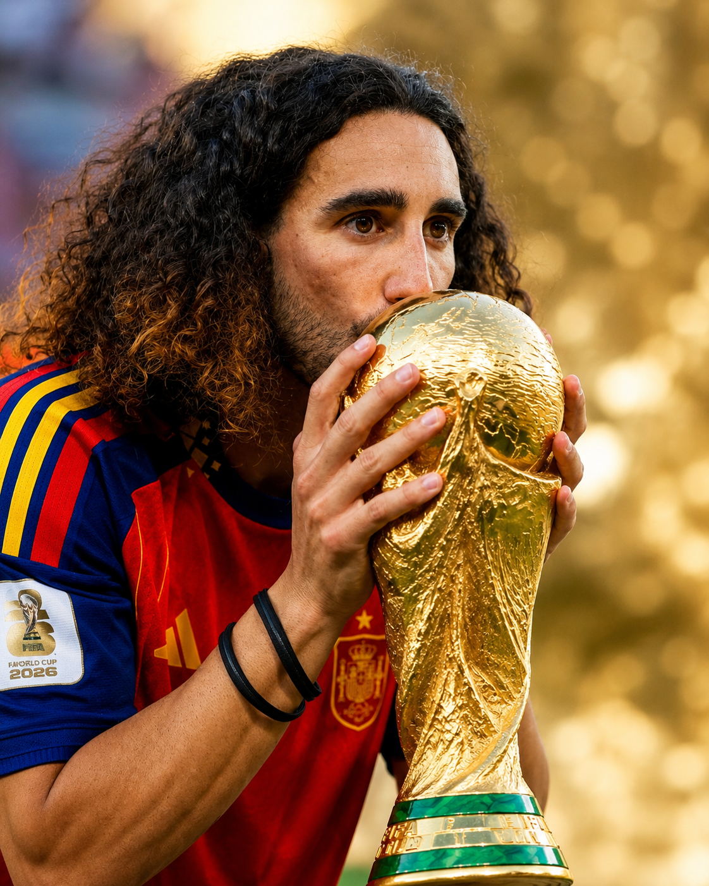

In July 2026, Marc Cucurella would stand on top of the world stage of the football world, crowned the champions of the World Cup.
He had helped Spain win this once-every-4-year tournament for the second time in its entire history, completing one of the greatest years of his career after starting throughout the tournament. Millions celebrated the defender for his performance throughout the group stage and knockout rounds and cheered as he helped lift football’s most prestigious international trophy.
Yet, after winning what professional footballers would only dream about, his thoughts were not focused on the medal, championship, or even football. They would drift towards his older son.
Because, while the world saw a champion of the World Cup, Cucurella saw himself as a father still trying to understand how to best help his child navigate life.
Cucurella was born on July 22, 1998, in Alella, Spain, just on the periphery of Barcelona, Spain’s hub for football. Like many other Spanish children, football would be a staple of his childhood, joining Espanyol before moving to Barcelona’s famed La Masia academy, where he developed into one of Spain’s most gifted fullbacks.
His transfer to Chelsea in 2022 looked like a dream, but then life would change in a drastic way for Cucurella’s family. In 2019, Cucurella and his wife had welcomed their first son, Mateo. They celebrated this milestone, like many other first-time parents. However, over time, they began noticing things that seemed different. Mateo was not developing like other children; he was not communicating, interacting, and personifying himself like his peers. Certain routines would become difficult as he became overwhelmed.
After further evaluation, Mateo was diagnosed with Autism Spectrum Disorder. Cucurella has publicly stated that the diagnosis was a very difficult moment in his life because of the uncertainty of what was best for him. He admitted there were nights when he and his wife would be putting their son to bed, wondering if they were doing everything they could for him or were missing something that would make life easier for him.
Cucurella felt that football had slowly slipped from the most important part of his life. His family moved countries, navigated doctor’s appointments, searched for specialists, and tried their best to understand autism. It became only one part of an ever-changing, complex life.
The right school for Mateo became one of the family’s biggest priorities, not the biggest club or highest paycheck. After struggling to find a suitable educational setting, they finally found a school in London equipped to better support autistic children,n and Cucurella found remarkable differences.
Cucurella said that watching Mateo make even the smallest developmental steps brought him more happiness than almost anything he has experienced in football.
For years, the family has kept this journey private; however, after winning the 2026 World Cup, Cucurella began speaking openly about autism in interviews. He admitted that sometimes the hardest part of being a father is being uncertain how to properly help your children. The interview resonated with millions of parents because it captured a feeling that all of them carried internally: loving your child completely and wishing only the best for them. By speaking publicly, Cucurella also normalized conversations surrounding autism, not through medical advice but through transparency with his own situation.
Cucurella reminds us that the greatest victories in life often happen far away from stadium lights and cameras, and sometimes courage isn’t playing through pain or lifting the World Cup trophy. It's admitting that you don’t have all the answers and doing everything you can to better your child’s life.
"The most important title he will ever hold isn’t being a World Cup champion, but being a father."
The most important title he will ever hold isn’t being a World Cup champion, but being a father.
References
Sources
- Cadena SER — Cucurella relata cómo es compatibilizar el fútbol de élite con la vida como padre de un niño con autismo (external link)
- El País — Marc Cucurella interview during the 2026 FIFA World Cup (external link)
- BioBioChile — Marc Cucurella: de su emotiva lucha diaria por su hijo con autismo a pelear por la Copa del Mundo (external link)
- FIFA — Official 2026 FIFA World Cup tournament coverage and Spain championship information (external link)